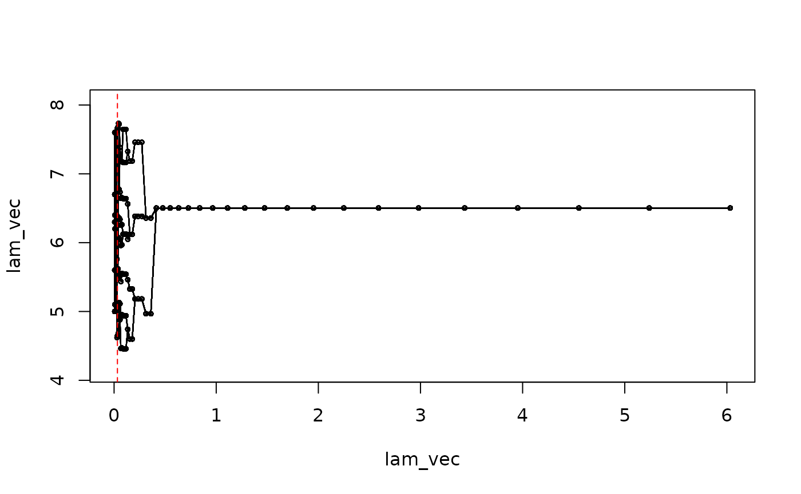
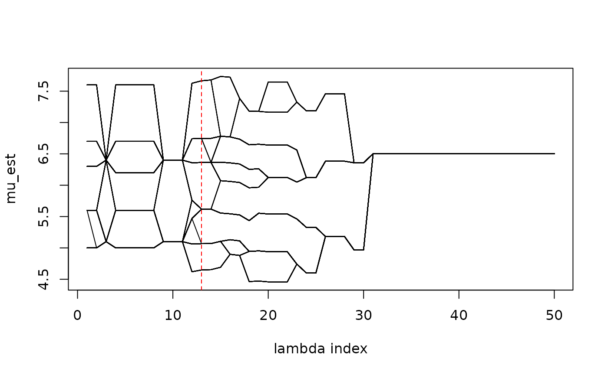
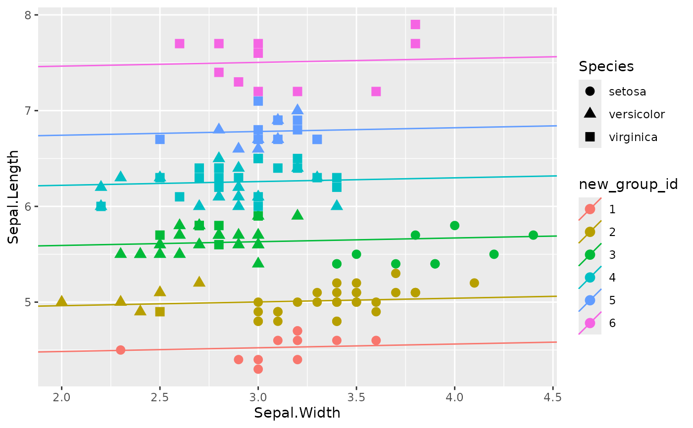

remotes::install_github("fenguoerbian/RSAVS", force = TRUE) # get the latest version of RSAVS
#> Using github PAT from envvar GITHUB_PAT. Use `gitcreds::gitcreds_set()` and unset GITHUB_PAT in .Renviron (or elsewhere) if you want to use the more secure git credential store instead.
#> Downloading GitHub repo fenguoerbian/RSAVS@HEAD
#> Running `R CMD build`...
#> * checking for file ‘/tmp/RtmpMi38cE/remotes623f27931686/fenguoerbian-RSAVS-139b1e9/DESCRIPTION’ ... OK
#> * preparing ‘RSAVS’:
#> * checking DESCRIPTION meta-information ... OK
#> * cleaning src
#> * checking for LF line-endings in source and make files and shell scripts
#> * checking for empty or unneeded directories
#> * building ‘RSAVS_0.1.4.tar.gz’
#> Installing package into '/home/runner/work/_temp/Library'
#> (as 'lib' is unspecified)In this vignette, we try to apply our RSAVS method onto the classical
iris dataset.
| Name | iris |
| Number of rows | 150 |
| Number of columns | 5 |
| _______________________ | |
| Column type frequency: | |
| factor | 1 |
| numeric | 4 |
| ________________________ | |
| Group variables | None |
Variable type: factor
| skim_variable | n_missing | complete_rate | ordered | n_unique | top_counts |
|---|---|---|---|---|---|
| Species | 0 | 1 | FALSE | 3 | set: 50, ver: 50, vir: 50 |
Variable type: numeric
| skim_variable | n_missing | complete_rate | mean | sd | p0 | p25 | p50 | p75 | p100 | hist |
|---|---|---|---|---|---|---|---|---|---|---|
| Sepal.Length | 0 | 1 | 5.84 | 0.83 | 4.3 | 5.1 | 5.80 | 6.4 | 7.9 | ▆▇▇▅▂ |
| Sepal.Width | 0 | 1 | 3.06 | 0.44 | 2.0 | 2.8 | 3.00 | 3.3 | 4.4 | ▁▆▇▂▁ |
| Petal.Length | 0 | 1 | 3.76 | 1.77 | 1.0 | 1.6 | 4.35 | 5.1 | 6.9 | ▇▁▆▇▂ |
| Petal.Width | 0 | 1 | 1.20 | 0.76 | 0.1 | 0.3 | 1.30 | 1.8 | 2.5 | ▇▁▇▅▃ |
table(iris$Species)
#>
#> setosa versicolor virginica
#> 50 50 50There are 150 observations in this dataset containg 3 different
species of iris flowers. We can visualize the relationship between
Sepal.Width and Sepal.Length.
ggplot(data = iris, aes(Sepal.Width, Sepal.Length, color = Species, shape = Species)) +
geom_point() +
geom_smooth(method = "lm")
#> `geom_smooth()` using formula = 'y ~ x'
As we can see, these three species seem to share the slope term (although in this figure, the slope terms are different), only differs at intercept terms, which seems to be suitable for our proposed model. We can conduct an subgroup analysis model on the overall dataset:
y_vec <- iris$Sepal.Length
x_mat <- iris$Sepal.Width
res <- RSAVS_Path(y_vec, x_mat, l_type = "L2",
lam1_len = 50, min_lam1_ratio = 0.1, lam2_vec = c(0),
max_iter = 1000, cd_max_iter = 0, tol = 10 ^(-5) ,
const_abc = rep(1, 3))
#> `const_r123` is missing. Use default settings!
#> lam1_vec is missing, use default values...
#> `initial_values` is missing, use default settings!
#> prepare intermediate variables needed by the algorithm
#> generate pairwise difference matrix
#> compute `beta_lhs`
#> compute `mu_lhs`
#> compute `mu_beta_lhs'
#> additional variables prepared!
#> No penalty for beta!
#> No penalty for beta!
#> No penalty for beta!
#> No penalty for beta!
#> No penalty for beta!
#> No penalty for beta!
#> No penalty for beta!
#> No penalty for beta!
#> No penalty for beta!
#> No penalty for beta!
#> No penalty for beta!
#> No penalty for beta!
#> No penalty for beta!
#> No penalty for beta!
#> No penalty for beta!
#> No penalty for beta!
#> No penalty for beta!
#> No penalty for beta!
#> No penalty for beta!
#> No penalty for beta!
#> No penalty for beta!
#> No penalty for beta!
#> No penalty for beta!
#> No penalty for beta!
#> No penalty for beta!
#> No penalty for beta!
#> No penalty for beta!
#> No penalty for beta!
#> No penalty for beta!
#> No penalty for beta!
#> No penalty for beta!
#> No penalty for beta!
#> No penalty for beta!
#> No penalty for beta!
#> No penalty for beta!
#> No penalty for beta!
#> No penalty for beta!
#> No penalty for beta!
#> No penalty for beta!
#> No penalty for beta!
#> No penalty for beta!
#> No penalty for beta!
#> No penalty for beta!
#> No penalty for beta!
#> No penalty for beta!
#> No penalty for beta!
#> No penalty for beta!
#> No penalty for beta!
#> No penalty for beta!
#> No penalty for beta!Here we choose linear regression (l_type = "L2") coupled
with the default SCAD penalty for subgroup analysis. The variable
selection in our model is omitted since the penalty vector is set to 0
(lam2_vec = c(0)). We can visualize the estimated subgroups
along the solution path.
NOTE: This figure is different from the solution
path later, because here we use the augmented s_vec in the
ADMM algorithm to determine the subgroup structure while later
pamk is applied to further determine the group
structure.
mu_path <- RSAVS:::Draw_Mu_Path(result = res, lam2_id = 1, useS = T)
#> There are 35 group(s).
#> There are 35 group(s).
#> There are 35 group(s).
#> There are 35 group(s).
#> There are 35 group(s).
#> There are 35 group(s).
#> There are 35 group(s).
#> There are 35 group(s).
#> There are 35 group(s).
#> There are 35 group(s).
#> There are 35 group(s).
#> There are 28 group(s).
#> There are 28 group(s).
#> There are 27 group(s).
#> There are 21 group(s).
#> There are 19 group(s).
#> There are 13 group(s).
#> There are 11 group(s).
#> There are 9 group(s).
#> There are 7 group(s).
#> There are 7 group(s).
#> There are 7 group(s).
#> There are 5 group(s).
#> There are 4 group(s).
#> There are 4 group(s).
#> There are 3 group(s).
#> There are 3 group(s).
#> There are 3 group(s).
#> There are 2 group(s).
#> There are 2 group(s).
#> There are 1 group(s).
#> There are 1 group(s).
#> There are 1 group(s).
#> There are 1 group(s).
#> There are 1 group(s).
#> There are 1 group(s).
#> There are 1 group(s).
#> There are 1 group(s).
#> There are 1 group(s).
#> There are 1 group(s).
#> There are 1 group(s).
#> There are 1 group(s).
#> There are 1 group(s).
#> There are 1 group(s).
#> There are 1 group(s).
#> There are 1 group(s).
#> There are 1 group(s).
#> There are 1 group(s).
#> There are 1 group(s).
#> There are 1 group(s).
matplot(1 : 50, mu_path, xlab = "lambda index", ylab = "mu_est", type = "l", col = "black", lty = 1)We can use the identified subgroups to do post-selection estimation and then choose the model that minimize the mBIC criteria as our final model.
bic_res <- sapply(1 : nrow(res$mu_mat), FUN = function(id, rsavs_res, useS, y_vec, x_mat, l_type, l_param, phi, const_a, double_log_lik){
beta_vec <- rsavs_res$w_mat[id, ]
mu_vec <- rsavs_res$mu_mat[id, ]
n <- length(mu_vec)
# determine the grouped mu_vec
if(useS){
group_res <- RSAVS:::RSAVS_S_to_Groups(rsavs_res$s_mat[id, ], n)
mu_improved <- RSAVS:::RSAVS_Determine_Mu(mu_vec, group_res)
}else{
mu_improved <- RSAVS:::RSAVS_Determine_Mu(mu_vec)
}
# message(length(table(mu_improved)))
# post-selection estimation
post_est <- try(RSAVS:::RSAVS_Further_Improve(y_vec, x_mat, l_type, l_param, mu_improved, beta_vec))
if(!inherits(post_est, "try-error")){
beta_vec <- post_est$beta_vec
mu_improved <- post_est$mu_vec
}else{
message("further improve error at id = ", id)
}
bic <- RSAVS:::RSAVS_Compute_BIC(y_vec, x_mat, beta_vec, mu_improved, l_type, l_param, phi, const_a, double_log_lik)
active_num <- sum(beta_vec != 0)
group_num <- length(unique(mu_improved))
res <- c(bic, group_num, active_num)
names(res) <- c("bic", "group_num", "active_num")
return(res)
},
rsavs_res = res, useS = FALSE, y_vec = y_vec, x_mat = x_mat,
l_type = "L2", l_param = 0, phi = 5, const_a = 1, double_log_lik = TRUE)We select the model that minimized the modified BIC
idx <- which.min(bic_res[1, ])
(bic_res[, idx])
#> bic group_num active_num
#> 3.173693 6.000000 1.000000This chosen model can be visualized in the solution path as
mu_path <- RSAVS:::Draw_Mu_Path(result = res, lam2_id = 1, useS = FALSE)
abline(v = res$lam1_vec[idx], lty = 2, col = "red")
matplot(1 : 50, mu_path, xlab = "lambda index", ylab = "mu_est", type = "l", col = "black", lty = 1)
abline(v = idx, lty = 2, col = "red")
The selected model identifies three subgroups from the population. We can do post selection estimation, without any penalty, given the chosen model struture.
post_est <- RSAVS:::RSAVS_Further_Improve(y_vec, x_mat, l_type = "L2", l_param = 0,
mu_vec = mu_path[idx, ],
beta_vec = res$w_mat[idx, ])
mu_post <- post_est$mu_vec
beta_post <- post_est$beta_vecWhen comparing the estimated subgroup structure with the
Species variable, we can see that the estimated subgroup
structure mainly focuses on the values of Sepal.Length. The
Rand Index between the estimated subgroup structure and the
Species is only 0.6899329. Also, after accounting for the
difference in Sepal.Length into subgroups, the effect of
Sepal.Width becomes near to none.
iris$new_group_id <- as.factor(as.numeric(as.factor(mu_post)))
iris$intercept_est <- mu_post
iris$slope_est <- beta_post
ggplot(data = iris, aes(Sepal.Width, Sepal.Length, color = new_group_id, shape = Species)) +
geom_point(size = 3) +
geom_abline(aes(slope = slope_est, intercept = intercept_est, color = new_group_id))
The unsupervised nature of the proposed method(subgroup identification) is demonstrated in this example. The algorithm will classify subjects into small groups based on the value of response(residuals after accounting for the covariate effects). The grouping results are not guaranteed to be aligned with any given observed attributes.